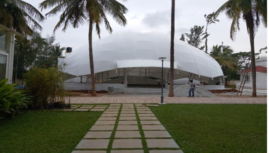
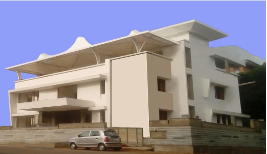
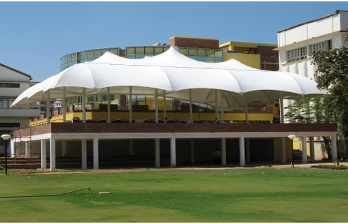
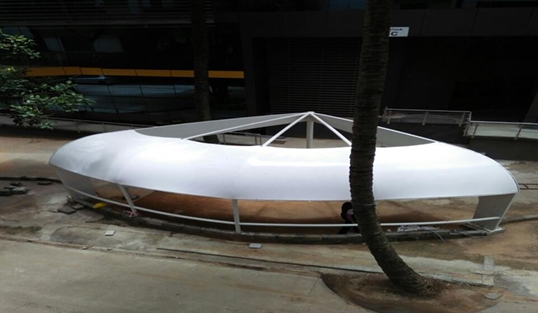

Tensile structures are architectural forms that utilize tensioned membranes, cables, or fabrics to create lightweight and aesthetically pleasing designs. These structures are known for their flexibility, durability, and ability to cover large spans without internal supports.
We follow a comprehensive approach to ensure the successful delivery of your tensile structure project:
Explore some of our completed tensile structure projects:




Ready to explore tensile structure solutions for your project? Get in touch with us today!
📞 Phone: +91 9980800925
📧 Email: info.deepafabtech@gmail.com